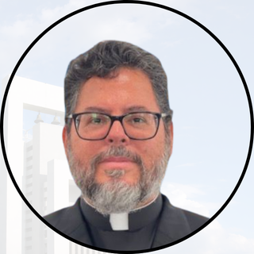

Parroquia Espíritu Santo


Estos son los horarios de misas celebradas exclusivamente en la
Parroquia Espíritu Santo.
No incluyen los horarios de capillas ni de otras sedes.
| Día | Horario |
|---|---|
| Lunes a Viernes (Sagrario) |
8:00 AM y 7:00 PM
(Sagrario) |
| Sábado |
8:00 AM y 7:00 PM
(Únicamente misa sábado 7 PM en Nuevo Templo) |
| Domingo |
8:00 AM, 9:30 AM, 11:00 AM, 12:30 PM y 7:00 PM
(Todas las misas en Nuevo Templo) |
Mantente informado consultando el apartado de Avisos Generales de la parroquia.
Te esperamos en la Parroquia Espíritu Santo, ubicada en Blvd. Acapulco #619, Col. Cañada Blanca, 67114 Guadalupe, N.L.
Ellos son los presbíteros de la Parroquia Espíritu Santo, encargados de acompañar y servir a nuestra comunidad parroquial.



Estos son los horarios de atención de nuestra Oficina Parroquial.
| Día | Horario |
|---|---|
| Lunes a Viernes |
9:00 A.M. a 2:00 P.M.
3:30 P.M. a 7:00 P.M. |
| Sábado | 9:00 A.M. a 2:00 P.M. |
| Domingo | Cerrado |
Para solicitar información o resolver cualquier duda, comunícate a los siguientes números:
Conoce las capillas que forman parte de nuestra comunidad parroquial, sus ubicaciones y la información de cada una.